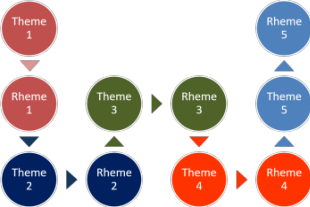

Genre and theme-rheme structure

When texts share the same
general purpose in the culture, they
will often share the same obligatory
and optional structural elements and so
they belong to the same genre or text type.
(Butt
et al, p9 [emphasis added])
There are two things to notice, highlighted above.
- general purpose: this refers to the reason for a text. What is it doing?
- structural elements: what is each part of the text doing?
The next thing to note is that genre is not defined in its literary, musical or lay sense here. In those registers genre includes, e.g., science fiction, romance, thriller, detective, heavy metal, folk, classical etc. That is not a useful definition of genre for our purposes.
 |
General purpose |
What are the purposes of texts? Think for a moment about a text you have encountered recently (written or spoken and including this one if you like) and then click here to see how many purposes you have thought of.
Here's a short list of the most commonly encountered genres:
- RECOUNT
- the setting out of a sequence of events to say what happened and
describe their significance. A spoken recount might begin with:
A funny thing happened to me on the way to the office this morning. - NARRATIVE
- to retell a set of events with a problematic or unexpected
outcome to entertain and/or instruct. A narrative might
begin with:
Once upon a time ... - PROCEDURE
- to explain how to do something. An example might be
something that came with a piece of self-assembly furniture and
might begin:
Locate leg A and bolt Z. - INFORMATION REPORT
- to provide information about something (that's what this text is doing)
- EXPLANATION
- to say why and how something happens. An explanation
often involves explaining cause and effect so such a text might
begin:
Above 2000 meters, the air becomes noticeably thinner so water boils at a lower temperature. This causes ... - EXPOSITION
- to argue a case. This is a one-sided view and a
typical exposition text might begin:
We the undersigned write to protest that ... - DISCUSSION
- to present both sides of a case before (possibly) coming to a decision.
A typical discussion text might begin:
There is a range of views about the usefulness of the passive voice form in English. Some believe ...
Can you think of another example for each of the above? Click here when you have a list.
It is not hard to see
that there is potential overlap between some of these.
Recount and Narrative are similar as are Procedure, Information
report and Explanation; Exposition and Discussion are often
confused. The similarities and differences can be seen in the
table below but before we get to that, we need to consider where a
text is situated, not physically but socially.
The context of culture |
Culture plays a very significant role in how people choose to
communicate with each other as you may have discovered if you have
been to country whose culture is so far removed from your own that
you find it almost impossible to understand what people are doing
and saying. This is not only a linguistic issue because within
cultures there are systems of meanings and mutually understood ways
of behaving which to others are simply alien and impenetrable.
This cultural knowledge grows more sophisticated and complete as we
grow up and children may often break the rules. Adults, after
a period of intense socialisation usually apply the rules of their
culture unconsciously.
However, culture varies in two ways:
- Synchronically

Cultures around the world and the languages they use have enormous variations in how texts are constructed and how social, spoken communication takes place.
In some, for example, deference towards elders and authority is encoded in terms of address, the sorts of verbs which are allowable and even the nouns one uses.
In others, power distance is much narrower and terms of address rarely used. In the USA and the UK, for example, it is quite common for banks to address customers in email messages and on websites using the customer's first names. Such an approach is completely unthinkable (literally) in many other cultures in which a respectful attitude is a social imperative.
Languages reflect the society in which they develop and change and reflect the needs of their speakers. In some cultures, for example, a clear distinction is made between the names for and the forms of address one uses with maternally or paternally related people so there is a distinction between grandmother as the mother of my mother and grandmother as the mother of my father. In other cultures, no difference at all is made between the words describing what in English are signalled by the words brother, sister and cousin and English has no way of distinguishing a male from a female cousin, slightly unusually.
Such differences do not arise randomly – they are the product of, usually, many hundreds of years of language change and development. - Diachronically
It will not be a surprise to you, whatever culture you inhabit and whatever language you speak at home to discover that languages vary over time.
Ways of expression which were once conventional and often almost compulsory change over time as do the ways in which we communicate with each other. Each innovation (text messaging, emails, online video chats, virtual meetings and so on) brings with it a change in the form and structure of the language we use.
For example, two editions of the same newspaper separated by as little as 20 years when put side by side are instantly recognisable by people in the culture in which they were produced and easily assigned to the decades in which they were written.
Dialogue in a movie made 50 years ago and one made last year will also be recognisably different to people in the culture because the topics, the forms of address and the language structures themselves are phenomena which betray their vintage.
We have been careful here to refer to people in the culture because, of course, people from other cultures may not be at all sensitive to such changes. For them, it's all foreign anyway. Most learners of English, for example, would have no way to distinguish between a letter from a landlord written 50 years ago and one written yesterday.
 |
The context of situation |
The context of situation is nested within the context of culture
and is the determining factor in how any text, spoken or written, is
the way it is.
A conversation between two friends on a riverside bench will be very
differently structured from, say, an encounter with a police officer
regarding your witnessing a traffic accident.
Equally, a letter expressing a complaint about a service received
from a shop and one inviting friends to a party will be very
differently set out and use completely different language
structures, lexical resources and layout. In the latter case,
too, the medium (probably email or a text message) will differ from
the former (which may even be via old-fashioned postal
services).
The context of situation, then, consists of three parts:
- The field
- What is the topic?
- What do the participants want to achieve?
- The tenor
- Who is speaking to whom?
- What is their relationship?
- The Mode
- How is communication happening?
- How is coherence maintained?
The field is described as the
experiential meaning of the text because it refers to the
world outside the language users themselves and their experiences of
it.
The Tenor is described as the interpersonal
meaning of the text because it refers to the participants
in the exchange.
The Mode is described as the textual
meaning because it relates to the type of text that is
being made and how it will be used or transmitted.
Diagrammatically, it looks like this:
To take our two example situations above, the situation looks like this:
| Context of situation | Friends on a bench | Police officer reporting | Party invitation | Service complaint |
|
Field Experiential meaning |
Varied mostly personal | Specific: a road traffic accident | Party | A product or service |
| Maintain social relationships and exchange information | To get and give information | To make an invitation | To complain | |
|
Tenor Interpersonal meaning |
Friends (same sex, similar ages) | Representative of authority and member of the public | Friends and acquaintances | Customer to supplier |
| Equals: no authority assumed | Knower to non-knower | Host to guest (potential) | Customer assumes authority | |
|
Mode Textual meaning |
Spoken only | Spoken and written (notes and diagrams) | Written (text, email etc.) | Written (post?) |
| Informal and unstructured | Formal and structured | Informal and structured | Formal and structured | |
| Potential text types or genres | Multiple: recount, narrative, information report etc. | Recount:
sequence of events Information report: what was seen |
Information report (where, when, who, why etc.) | Information
report: the situation Narrative: what happened Exposition: what should happen |
It is simple to see from these examples that the way in which the text is constructed and the language which is used will be radically different in all these cases. The participants will, for example:
- Pose questions (or not)
- Use verbs concerning behaviours or relationships between entities as well as those referring to thoughts, opinions and statements of facts (or not)
- Express circumstances or time, place, angle and contingency (or not)
- Use appropriate tense forms
- Refer to shared information outside the text (or not)
- Maintain formal textual cohesion (or not)
- Structure what they say or write chronologically or by theme
- Use politeness and distancing strategies (or not)
- Use modality of various kinds (or not)
There is more in the guides to verbal processes and circumstances, linked in the list of related guides at the end.
 |
Structural elements |
All of these text types or genres have distinct way of structuring information in English or at least most Anglophone countries (other languages and other cultures do things differently).
| Genre or text type | Staging | Very simple example |
| RECOUNT | Orientation: who/what is the story
about? Record of events: in chronological order Reorientation: what happened in the end? Coda: how did I feel/think/react? |
I was in London for the first time. I visited lots of museums and galleries. I went home in the evening. I enjoyed it all but was tired. |
| NARRATIVE | Orientation: who/what/where? Complication: the crisis/problem and an evaluation Resolution: how was the problem resolved? Coda: how did I feel/think/react? |
My friend and I were on the train. I suddenly realised I had lost my ticket. I had to pay for a new ticket. It was not a good day because I lost a lot of money. |
| PROCEDURE | Goal: what do you want to do? Materials: what do you need? Steps in sequence |
To plant the tree: You will need a spade and some fertiliser Dig a large hole, put in the fertiliser and then the tree. Fill in the hole and water it well. |
| INFORMATION REPORT | Identification: what's it about? Description: sections bundled in topic areas |
Owls live near my house. They only come out at night and then they hunt for mice and other animals. They have chicks in the spring time. |
| EXPLANATION | Identification: what am I explaining? Explanation: the phases in the process |
Olive trees are often attacked by a kind of fly which lays its eggs in the unripe fruit. The fruit does not ripen properly because of this and the oil yield is reduced. |
| EXPOSITION | Statement of position Preview of arguments Arguments: statement + evidence in each case Restatement of position |
People should not study grammar. It's too difficult because there are lots of rules. It doesn't help you speak because you can't remember the rules. So don't bother with it. |
| DISCUSSION | Issue Arguments for Arguments against (All the arguments for can follow each other before arguments against [FFF followed by AAA] or they can be interwoven [FAFAFA].) Optionally, this genre may have a conclusion stating the writer's view. |
Grammar may be useful. Some
people like learning rules and working things out because it
interests them. Other people don't enjoy it because it's boring. Grammar helps you write well because you have time to think. Grammar doesn't help you speak because there's too much time pressure. Grammar maybe useful for some people. |
How much can you remember? Click here for a test before we go on.
There may, of course, be subgenres within these categories so,
for example, you may read a news report in a newspaper which happens
to be a kind of recount and follows the same pattern as most
recounts. On the other hand, some news reports are Information
reports because they do not recount a series of events but try to
give the facts of a matter. Others may be Explanations.
We may also be confronted by a blog page and will
need to figure out whether it's a narrative, a recount, an
exposition, a discussion or what so we can understand its nature and
know where to look for the data we need. We also need that
information to make sure it is what we are looking for. A page from an
instruction manual will usually follow the patterns of an
explanation but parts of it will usually be an information report
and so on.
Once you have identified the overarching category, we can then say
what subgenre the text belongs to.
If you prefer a diagram:

As you can see, genres can be a characteristic of many text types
so, for example, a spoken or written anecdote may be a narrative or
it may be a simple recount. It may even be an information
report (or contain one).
Although the word genre is used quite loosely in everyday terms to
refer to types of literature, painting, film and so on, it is not
used that way here. None of the subcategories above
constitutes a genre in its own right although they may loosely be
described as text types.
Do not suggest, for example, that a newspaper is a genre. It
isn't because it is a collection of different sorts of texts which
have different generic characteristics. Web pages, too, do not
constitute a genre because we have to look at the intentions of the
author and the purposes of the texts to identify exactly what the
genre really is.
 |
Theme and rheme |
This will be familiar territory if you have looked at
the guide to spoken discourse, linked below.
You are probably familiar with the idea that the first sentence of
many paragraphs in written texts signals the writer's theme for the
paragraph. This is often called the topic sentence.
Consider this paragraph from a popular novel (La Plante, 2006) which is
an extended narrative with smaller narrative sequences inserted within
it, like most novels:
Arriving at Milan airport, Anna passed through customs way behind Langton and Professor Marshe. They seemed to be in deep conversation; he was constantly bending down to listen to her, guiding her with one hand at the small of her back. There was a familiarity about them that Anna found upsetting
- The first clause sets the scene and is called the theme (it's the non-finite clause, Arriving at Milan airport). The rheme of that is Anna passed through customs
- This becomes the theme of the next small section with the rheme way behind Langton and Professor Marshe
- They (the two characters, Langton and Marshe) form the theme of the next clause which has as its rheme in deep conversation
- This idea forms the theme of the next section with the rheme he was constantly bending down to listen to her, guiding her with one hand at the small of her back
-
That rheme becomes the next theme (a familiarity about them) which has as its rheme Anna found upsetting.
This is how well written paragraphs hang together and guide the reader smoothly through the text.
There is much more to it than this and not all texts (spoken or written) will conform to such a neat structure. It is possible, for example, for theme 1 to have rheme 1 and for that to become theme 5 later in the text and so on.
Theme-rheme structures can look nice and tidy, like this:

or they can be much more complicated with, for example, the first rheme becoming the fourth
theme and so on, like this:
where:
Theme 1 has rheme 1 which becomes theme 2 with a new rheme 2.
Rheme 2 becomes both theme 3 and theme 4.
Then rheme 3 becomes theme 5 and rheme 4 becomes theme 8 and so on.
The more the theme-rheme structure is disturbed, the more difficult the
text is to navigate and comprehend and the more lost the reader (and
writer) can
become.
| Related guides | |
| using a genre approach | the next logical step |
| theme and rheme | for a more detailed look at this area |
| paragraph structure | for a guide focusing on parts of texts only and their conventional structure |
| genre in English for Academic Purposes | this has more detail but is linked primarily to EAP |
| tense and genre | for a guide to which tenses are most frequently used in certain generic types and how they are used |
| spoken discourse | a general guide to speaking which draws on discourse analysis but also considers the structure of interactions |
| verbal processes | the guide concerned with what verbs do and what text types they appear in |
| circumstances | the guide to ways of referring to time, place, angle, contingency and so on within a genre approach |
| tense and genre | this guide is concerned with what some refer to as narrative tenses |
| teaching language skills | the overview of skills teaching with links to other guides which considers how to alert learners to Field, Tenor and Mode |
References:
Butt, D, Fahey, R, Feez, S, Spinks, S and Yallop, C, 2001, Using Functional Grammar: an
explorer's guide, Sydney NSW: NCELTR (If you are interested in teaching using a genre approach, this is an
invaluable guide.)
La Plante, L, 2006, The Red Dahlia, London: Simon and Schuster